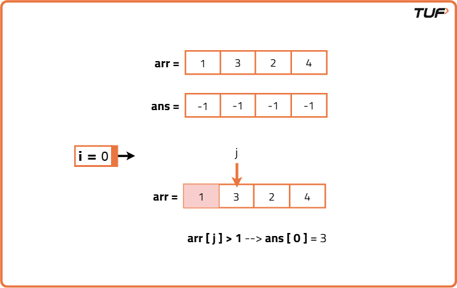
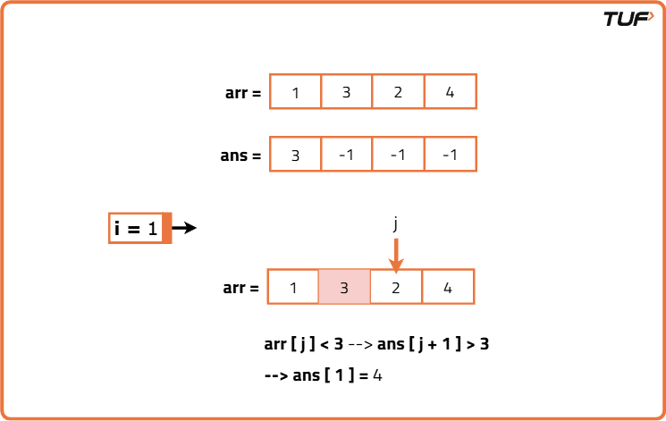
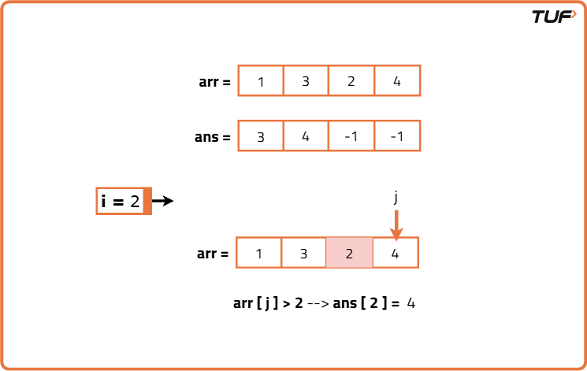
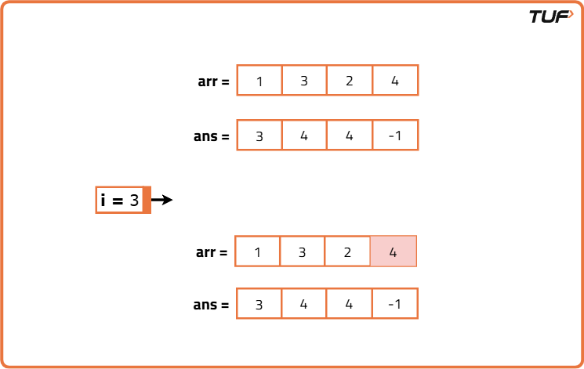
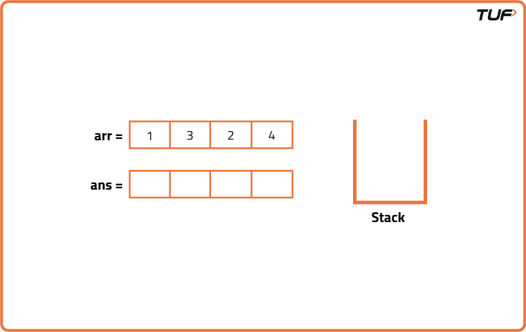
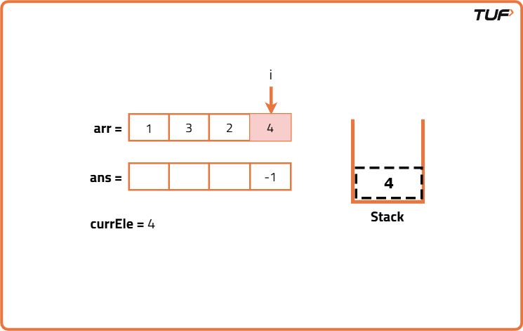
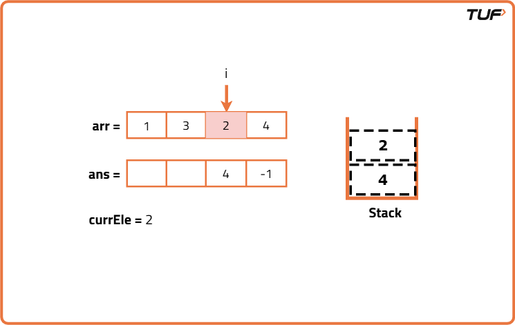
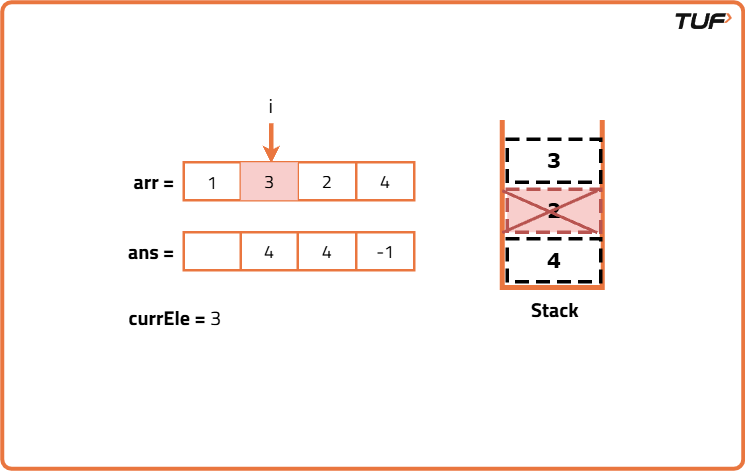
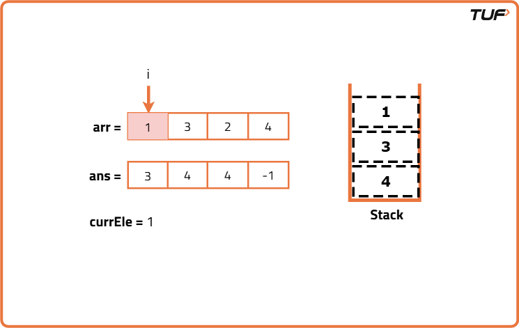

Next Smaller Element
Problem Statement:
Given an array of integers arr, your task is to find the Next Smaller Element (NSE) for every element in the array.
The Next Smaller Element for an element x is defined as the first element to the right of x that is smaller than x.
If there is no smaller element to the right, then the NSE is -1.
Examples
Example 1: Input: arr = [4, 8, 5, 2, 25] Output: [2, 5, 2, -1, -1] Explanation: - For 4, the next smaller element is 2. - For 8, the next smaller element is 5. - For 5, the next smaller element is 2. - For 2, there is no smaller element to its right → -1. - For 25, no smaller element exists → -1. Example 2: Input: arr = [10, 9, 8, 7] Output: [9, 8, 7, -1] Explanation: Each element’s next right neighbor is smaller. Each element’s next right neighbor is smaller.
Disclaimer: Here is the practice link to help you assess your knowledge better. It's highly recommend trying to solve it before looking at the solution.
Brute Force
Algorithm
- Initialize an answer array filled with -1
- Loop from i = 0 to n - 1
- Loop from j = i + 1 to n - 1
- If a smaller element is found at j, update answer[i] and break
- Continue to the next i
- Return the answer array




Code
#include <bits/stdc++.h>
using namespace std;
class Solution {
public:
/* Function to find the next smaller
element for each element in the array */
vector<int> nextSmallerElement(vector<int>& arr) {
int n = arr.size(); // size of array
// To store the next smaller elements
vector<int> ans(n, -1);
for (int i = 0; i < n; ++i) {
// Get the current element
int currEle = arr[i];
/* Nested loop to get the
next smaller element */
for (int j = i + 1; j < n; ++j) {
// If the next smaller element is found
if (arr[j] < currEle) {
// Store the next smaller element
ans[i] = arr[j];
// Break from the loop
break;
}
}
}
// Return the answer
return ans;
}
};
int main() {
int n = 5;
vector<int> arr = {4, 8, 5, 2, 25};
/* Creating an instance of
Solution class */
Solution sol;
/* Function call to find the next smaller element
for each element in the array */
vector<int> ans = sol.nextSmallerElement(arr);
cout << "The next smaller elements are: ";
for (int i = 0; i < n; ++i) {
cout << ans[i] << " ";
}
return 0;
}Complexity Analysis
Time Complexity: O(N^2), since for each of the N elements, we might need to look at up to N-1 elements ahead.
Space Complexity: O(N), since we are using an output array of size N.
Optimal Approach
Algorithm
- Initialize an answer array filled with -1
- Initialize an empty stack
- Loop from i = n - 1 to 0
- While stack is not empty and top is greater than or equal to current element, pop the stack
- If stack is not empty, set answer[i] to top of stack
- Push current element to stack
- Return the answer array





Code
#include <bits/stdc++.h>
using namespace std;
class Solution {
public:
vector<int> nextSmallerElement(vector<int>& arr) {
int n = arr.size();
// Stack to store potential next smaller elements
stack<int> st;
// Answer array initialized with -1
vector<int> ans(n, -1);
// Traverse the array from right to left
for (int i = n - 1; i >= 0; i--) {
// Pop elements from stack while they are >= current element
while (!st.empty() && st.top() >= arr[i]) {
st.pop();
}
// If stack is not empty, top is the next smaller element
if (!st.empty()) {
ans[i] = st.top();
}
// Push current element to stack
st.push(arr[i]);
}
// Return result
return ans;
}
};
int main() {
vector<int> arr = {1, 3, 2, 4};
Solution sol;
// Get result
vector<int> ans = sol.nextSmallerElement(arr);
// Print result
cout << "The next smaller elements are: ";
for (int val : ans) {
cout << val << " ";
}
return 0;
}Complexity Analysis
Time Complexity: O(N), since each element is pushed and popped at most once.
Space Complexity: O(N), since stack may hold up to N elements in the worst case.